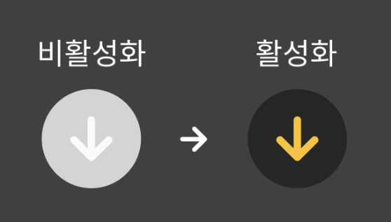
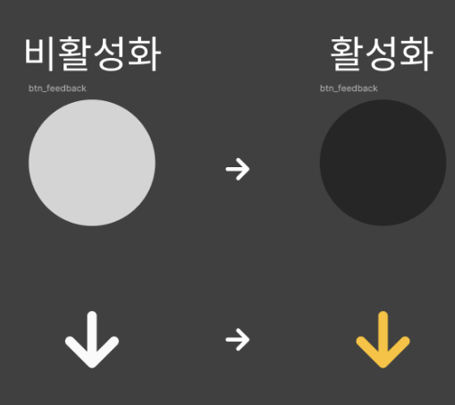

배경
정말 간단한 요구사항에서 시작했다. Docthru 프로젝트에서 SVG 아이콘이 20-30개 정도 사용되고 있었는데, Next.js 환경에서 이미지 최적화가 필요하다고 느꼈다.
처음에는 당연히 Next의 <Image> 컴포넌트를 사용하는 방법도 고려했고, svg 이미지를 동적으로 색상 변경도 하고 싶어서 svgr이나 다른 SVG 컴포넌트화 라이브러리를 찾아보고 있었다.
// 이런 방식으로 사용하려고 했었다
import HeartIcon from "./HeartIcon.svg"
const App = () => <HeartIcon fill="red" />근데 리서치하는 과정에서 중요한 문제를 발견했다. SVG 파일을 이렇게 리액트 컴포넌트로 변환하는 접근법이 사실 JS 번들 크기를 크게 증가시킨다는 것이다.
단순히 “아이콘 쓰는 방법”을 찾던 것에서 “최적화된 아이콘 시스템을 어떻게 구축할까?”라는 더 큰 문제로 확장된 것이다.
SVG-in-JS 방식의 문제점
계속 파고들면서 SVG-in-JS 방식의 구체적인 문제점을 파악했다
- 번들 크기와 파싱 시간: JS 번들이 커질수록 브라우저가 파싱하고 실행하는 시간이 길어진다. 이게 성능에 직접적인 영향을 준다.
- 기기 다양성 고려: 최신 고성능 기기에서는 차이가 크게 느껴지지 않을 수 있지만, 전 세계 사용자의 75%는 중저가 기기를 사용한다는 통계를 봤다. 우리는 모든 사용자를 배려해야 한다.
- 잘못된 접근법: SVG는 본질적으로 이미지를 설명하는 XML 태그인데, 이걸 JavaScript로 처리하는 건 형식에 맞지 않다. 그냥 이미지로 다루는 게 더 자연스럽다.
대안
1. Image + SVG 방식 (<img src='icon.svg'>):
- 장점: 가장 무난하고 Next의
<Image>로 최적화 가능 - 단점: 동적 CSS 스타일링이 어렵고, 매 아이콘마다 HTTP 요청이 발생
2. SVG-in-CSS 방식: CSS 속성을 사용하여 SVG 삽입
background-image / mask-image 속성 사용 (Data URI)
- 장점: HTTP 요청 감소 (data URI 사용 시), CSS 스타일링 용이, JS 번들 크기 감소 가능성
- 단점: data URI 인코딩 필요, 복잡한 SVG 내부 스타일링 제한, 브라우저 지원 고려 필요
3. SVG 스프라이트 방식 (<use> 태그로 스프라이트 참조):
- 장점: 한 번의 HTTP 요청, 동적 CSS 스타일링 가능, 브라우저 캐싱, JS 번들 크기에 영향 미미.
- 단점: 스프라이트 파일 생성 및 관리 어려움, 레이어 처리 복잡
리서치 노트: avoid-svg-in-js
채택한 방식: SVG 스프라이트 방식
이유
현재 차용하고 있는 Next의 <Image> 컴포넌트 방식을 유지하면서 점직적으로 도입할수 있는 방식이라 생각했다.
이미 <Image> src에 넣는 SVG 파일 path를 객체로 생성하는 스크립트를 만들어 사용중이여서, Sprite 파일 생성 스크립트를 추가하는것도 어렵지 않을 것 같았다.
여러번의 고난?끝에 현재 asset 폴더구조를 이용해 icon과 image 모은 스프라이트 파일 생성 하고 동적으로 css를 적용할수 있는 스크립트를 완성했다.
기술 구현:
- 속성을 개별적으로 추출하고 기본값을 설정
// 각 SVG 요소에서 기존 스타일 속성 추출
const fillMatch = attributes.match(/\sfill\s*=\s*['"]([^'"]+)['"]/)
const strokeMatch = attributes.match(/\sstroke\s*=\s*['"]([^'"]+)['"]/)
const widthMatch = attributes.match(/\swidth\s*=\s*['"]([^'"]+)['"]/)
const heightMatch = attributes.match(/\sheight\s*=\s*['"]([^'"]+)['"]/)
// 원본 값 저장 및 기본값 설정
const originalFill = fillMatch ? fillMatch[1] : null
const originalStroke = strokeMatch ? strokeMatch[1] : null
const originalWidth = widthMatch ? widthMatch[1] : "24"
const originalHeight = heightMatch ? heightMatch[1] : "24"- 기존 속성을 완전히 제거한 후 CSS 변수를 사용하여 동적 스타일링이 가능하도록 재구성
// 먼저 기존 속성들을 깔끔하게 제거 (fill, stroke, width, height 제거)
// viewport는 비율을 위해 유지
attributes = attributes.replace(/\sfill\s*=\s*['"][^'"]+['"]/gi, "")
attributes = attributes.replace(/\sstroke\s*=\s*['"][^'"]+['"]/gi, "")
attributes = attributes.replace(/\swidth\s*=\s*['"][^'"]+['"]/gi, "")
attributes = attributes.replace(/\sheight\s*=\s*['"][^'"]+['"]/gi, "")
// 그 다음 CSS 변수와 함께 재구성
let modifiedTag = `<${tag} ${attributes.trim()}`
if (originalFill) modifiedTag += ` fill="var(--${tag}-fill, ${originalFill})"`
if (originalStroke) modifiedTag += ` stroke="var(--${tag}-stroke, ${originalStroke})"`- 크기 조절 용이하게 고정 크기 제거
// 아이콘 SVG 파일에서 고정 크기 속성 제거 - 동적 크기 조절을 위한 핵심 작업
svgContent = svgContent.replace(/<svg[^>]*\swidth="[^"]*"/gi, "<svg")
svgContent = svgContent.replace(/<svg[^>]*\sheight="[^"]*"/gi, "<svg")<use>를 사용하기 위해<svg>태그를<symbol>태그로 변환 및 각 파일 이름 기반 id 부여
// 고유한 ID 생성 로직
const fileNameWithoutExt = path.basename(file, path.extname(file))
const symbolId = createIdName(fileNameWithoutExt)
// SVG를 Symbol로 변환
svgContent = svgContent
.replace("<svg", `<symbol id="${symbolId}"`)
.replace("</svg>", "</symbol>")
.replace(/\s?xmlns="http:\/\/www\.w3\.org\/2000\/svg"/g, "")변환 전
<svg xmlns="http://www.w3.org/2000/svg" width="24" height="24" viewBox="0 0 24 24">
<path fill="#000000" d="M7.41 8.59L12 13.17l4.59-4.58L18 10l-6 6-6-6z" />
</svg>변환 후
<svg xmlns="http://www.w3.org/2000/svg">
<symbol id="ic_arrowDown" viewBox="0 0 24 24">
<path fill="var(--path-fill, #000000)" width="var(--path-width, 24)" height="var(--path-height, 24)" d="M7.41 8.59L12 13.17l4.59-4.58L18 10l-6 6-6-6z"/>
</symbol>
<!-- 다른 심볼들 -->
</svg>
SVG <use>를 활용한 컴포넌트 추상화.
import cn from "@/utils/clsx"
export default function Svg({
name,
width = "24",
height,
type = "icon",
className,
addName = "",
style,
}) {
const calculatedHeight = height || width
const prefix = type === "icon" ? "ic" : "img"
return (
<svg
width={width}
height={calculatedHeight}
className={cn("Svg", className)}
aria-label={name}
style={style}
>
<use href={`/assets/${type}s_sprite.svg/#${prefix}_${name}`} className={cn(name)} />
{addName && (
<use href={`/assets/${type}s_sprite.svg/#${prefix}_${addName}`} className={cn(addName)} />
)}
</svg>
)
}활용예시: 피드백 폼에서의 동적 색상 변경
컴포넌트가 조건에 따라 비활성화 상태일때의 색과 활성화 될때의 색 동적으로 표시
// 컴포넌트.js
<Svg name="chatBubbles" className={cn(styles.chatIcon, { [styles.disabled]: disabled })} />// 컴포넌트.module.css
.disabled {
--path-fill: var(--grey-50); /* 비활성화 상태: 연한 회색 경로 */
--circle-fill: var(--grey-300); /* 비활성화 상태: 중간 회색 원 */
}레이어
한 블로그 Complete guide to SVG sprites에서 sprite내에서 symbol들을 더 잘게 레이어로 쪼개 재사용하는 법을 읽었다.
아이콘 자체로 재사용 하려했지 아이콘 내의 요소들을 또 나눠서 그걸 기반으로 또 사용할 생각을 못했었다.
버튼이 이렇게 비활성화 / 활성화 적용이 되어야 하는데 디자인대로 구현시 안의 화살표와 밖의 원을 서로 다른 색상을 적용을 시켜줘야 되어야했다.


그래서 수동으로 원부분과 화살표 아이콘을 따로 svg 파일로 분리해서 sprite에 넣고 컴포넌트에서 조합을 하였다.
레이어를 쌓아 구현하기 위해 <Svg> 컴포넌트를 svg를 한개 더 참조할수 있게 addName props를 추가했다
// props로 두번째 아이콘을 받으면 생성
{addName &&}디자인 일관성을 위해 아이콘 디자인 내에서 사용되는 요소들이 많아서 figma에서 다 분해후 정리해서 이렇게 레이어 처럼 쓰는것도 괜찮겠다 생각했다. 근데 품이 많이 들고 새 아이콘이 추가될때마다 개발자가 일일히 조합해서 사용하는것 또한 조금은 최적화 되는 성능에 비해 미친짓일지도…
프로젝트 내 활용 예시: 피드백 폼에서의 동적 색상 변경
// FeedbackForm.jsx
export default function FeedbackForm({ id }) {
// ... 다른 코드 생략 ...
<button className={s.submitButton} type="submit" disabled={!isValid}>
<Svg
addName="arrowDown" // 첫 번째 아이콘 - 화살표
name="circle" // 두 번째 아이콘 - 원
className="arrowCircle"
width="40"
/>
</button>
// ... 다른 코드 생략 ...
);
}CSS로 동적 색상 적용:
/* FeedbackForm.module.css */
.submitButton :global(.arrowCircle .circle) {
width: 40px;
height: 40px;
--circle-fill: var(--brand-black); /* 기본 상태: 검은색 원 */
}
.submitButton :global(.arrowCircle .arrowDown) {
--path-fill: var(--brand-yellow); /* 기본 상태: 노란색 화살표 */
transform: scale(0.6);
transform-origin: center;
}
.submitButton:disabled :global(.arrowCircle .circle) {
--circle-fill: var(--grey-100); /* 비활성화 상태: 회색 원 */
}
.submitButton:disabled :global(.arrowCircle .arrowDown) {
--path-fill: var(--grey-50); /* 비활성화 상태: 연한 회색 화살표 */
}결과 및 성과
이 SVG 스프라이트 시스템으로 얻은 주요 이점은:
1. CSS 변수를 통한 동적 스타일링
- 컴포넌트 상태에 따라 아이콘 색상 동적 변경 가능하다
- 호버, 포커스, 비활성화 등 다양한 상태 대응 가능하다
- 테마 변경에도 유연하게 대응할 수 있다
2. 일관된 아이콘 시스템
- 단일
<Svg>컴포넌트로 모든 아이콘 관리한다 - name 속성만으로 간단하게 아이콘 변경 가능하다
- 크기, 색상 등 속성을 일관되게 제어할 수 있다
3. 성능 최적화
- 스프라이트 방식으로 HTTP 요청 최소화된다
- JS 번들에 SVG 코드가 포함되지 않는다
- 브라우저 캐싱 효율 극대화된다
처음에는 단순한 최적화 작업이라고 생각했지만, 결국 사용자 경험과 개발 경험 모두를 크게 향상시키는 프로젝트가 되었다. 단순히 “아이콘을 사용”하는 것에서 “성능과 사용성을 모두 고려한 아이콘 시스템 구축”으로 접근 방식을 바꾸게 되었다.
기술적 성과 및 배운 점
- 웹 성능 최적화: JavaScript 번들 크기, 파싱/컴파일 시간, 메모리 사용량 등 다양한 측면에서의 성능 최적화 기법 습득
- 문제 해결 능력: 성능 문제 식별, 대안 리서치, 솔루션 설계 및 구현의 전체 주기 경험
- 시스템 설계: 확장 가능하고 유지보수하기 쉬운 아이콘 시스템 설계
- 점진적 마이그레이션: 기존 코드베이스를 유지하면서 새로운 패턴을 도입하는 전략 수립
단순한 이미지 최적화를 넘어, 웹 애플리케이션의 전체적인 성능과 사용자 경험을 고려한 종합적인 문제 해결을 하면서 많이 배울수 있었다.
- webpack
개발 여정
- 🌱 초기 아이디어: SVG-in-JS 피해야 하는 이유
참고자료
- Breaking Up with SVG-in-JS in 2023 (2023) by Extrem, K. - Kurt Extrem의 SVG-in-JS 문제점 및 대안 분석
- 2023년 SVG-in-JS와 결별 - Kurt Extrem 글의 한국어 번역
- Which SVG technique performs best for way too many icons? (2021) by Stika, T.
- 다양한 SVG 기법의 성능 비교 테스트
- Introducing @svg-use (2024) - SVG 스프라이트를 React에서 쉽게 사용할 수 있는 새로운 라이브러리 소개
- SVG Sprite 기법을 사용해 나만의 특별한 Icon 컴포넌트 개발 (2023) - SVG 스프라이트를 활용한 React 컴포넌트 구현 사례
- 아이콘으로 SVG 스프라이트를 만드는 방법(2023) - SVG 스프라이트 생성 방법론